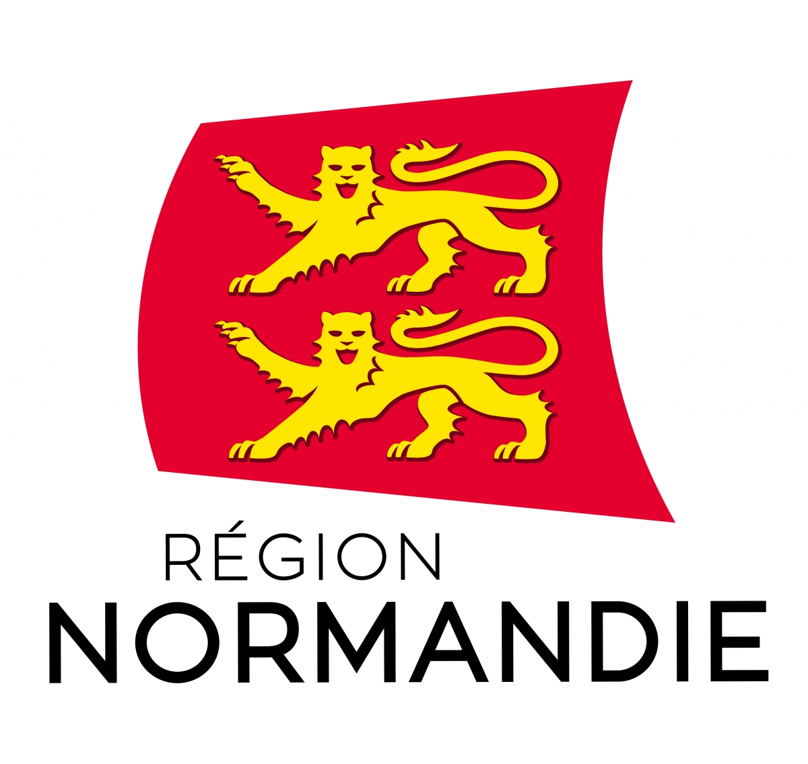

SAVOIRS NUMERIQUES
Bienvenue sur le site de formation Savoirs Numériques.
Vous trouverez ici le contenu et les supports de formation accessibles à la fois en
centre de formation
mais aussi de
chez vous
ou en
EPN
.
Pour accéder à un des chapitres de la formation,
cliquez
sur le titre du chapitre situé à
gauche
de cette page.
Copyright 2021 - Tous droits réservés - GRETA Normandie